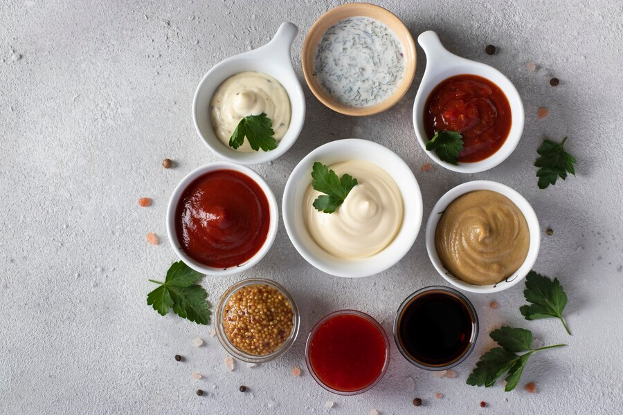

Condiments
Condiments:

Condiments are flavor-enhancing substances added to foods to elevate their taste, texture, or appearance. They include a wide range of sauces, spreads, spices, and seasonings that bring variety to meals. Condiments are often used to complement or contrast flavors, making dishes more appetizing and enjoyable. From ketchup and mustard to soy sauce and vinegar, condiments have become an essential part of cuisines worldwide, catering to diverse palates and preferences.
Type of Condiments:

Condiments come in various forms and are used differently across cultures. Some popular types include:
Sauces and Dips: Ketchup, mayonnaise, barbecue sauce, and hot sauce add richness and zest to snacks and main courses.
Spreads: Butter, jams, and nut spreads enhance the flavor of bread, toast, and sandwiches.
Seasonings:Salt, pepper, herbs, and spices bring out the natural taste of ingredients while adding complexity.
Pickles and Fermented Foods:Pickles, chutneys, and kimchi add tanginess and crunch, often acting as palate cleansers.
Vinegar and Oils:Balsamic vinegar, olive oil, and sesame oil are used for dressing salads, marinating meats, and enhancing flavors.

Ketchup
Mustard

Soy Sauce